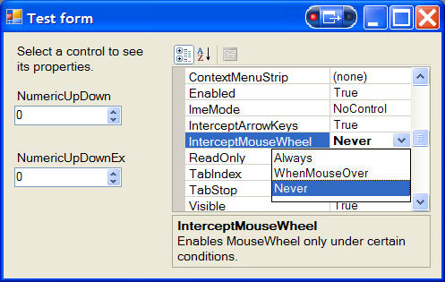
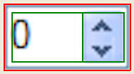
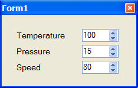
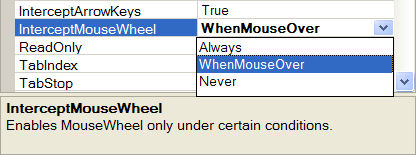

This control appeared on CodeProject.

If you have ever written a data-entry application, there's a big chance you used the NumericUpDown control. This control is great to provide a field to enter numeric values, with advanced features like up-down buttons and accelerating auto-repeat.
The other side of the coin is that NumericUpDown is not really mouse-aware. I experienced some bugs and bad behaviors:
TextBox properties, like SelectedText, SelectionStart, SelectionLength (an AutoSelect property will be useful).MouseEnter, MouseLeave.InterceptArrowsKeys for up/down keys, will be useful.That's why I decided to subclass it, fixing these points and adding missing features and properties.
I needed some missing TextBox properties when I was asked to select all the text in the control when it got the focus.
NumericUpDown exposes a Select(int Start, int Lenght) method you can call to select all text. At first try, I attached to the GotFocus event to call Select(0, x) but, hey, wait a moment... what should I use for x? It seems that any value is accepted, even if greater than the text length. OK, let's say x=100 and proceed. This works well with the keyboard focus keys (like TAB), but it's completely useless with the mouse: a mouse click raises the GotFocus event (where I select all the text), but as soon as you release the button, a zero-selection is done, leaving the control with no selection. OK, I thought, let's add a SelectAll on the MouseUp event too, but this way, the user cannot perform a partial selection anymore; each time the mouse button is released, all the text is selected. I need to know if a partial selection exists; in a TextBox, I can test it with SelectionLength > 0, so I need to access the underlying TextBox control.
Now comes the tricky part: NumericUpDown is a composite control, a TextBox and a button box. Looking inside it through the Reflector, we can find the internal field which holds the textbox part:
Friend upDownEdit As UpDownEdit ' UpDownEdit inherits from TextBox
We'll obtain a reference to this field using Reflection; this is done in the control creator.
''' <summary>
''' object creator
''' </summary>
Public Sub New()
MyBase.New()
' extract a reference to the underlying TextBox field
_textbox = GetPrivateField(Me)
If _textbox Is Nothing Then
Throw New ArgumentNullException(Me.GetType.FullName _
& ": Can't find internal TextBox field.")
End If
' ...
End Sub
''' <summary>
''' Extracts a reference to the private underlying textbox field
''' </summary>
Private Shared Function GetPrivateField _
(ByVal ctrl As NumericUpDownEx) As TextBox
' find internal TextBox
Dim textFieldInfo As Reflection.FieldInfo _
= GetType(NumericUpDown).GetField("upDownEdit", _
Reflection.BindingFlags.FlattenHierarchy _
Or Reflection.BindingFlags.NonPublic _
Or Reflection.BindingFlags.Instance)
' take some caution... they could change field name
' in the future!
If textFieldInfo Is Nothing Then
Return Nothing
Else
Return TryCast(textFieldInfo.GetValue(ctrl), TextBox)
End If
End Function
Now that we have the underlying TextBox, it is possible to export some missing properties:
<Browsable(False)> _
<DesignerSerializationVisibility( _
DesignerSerializationVisibility.Hidden)> _
Public Property SelectionStart() As Integer
Get
Return _textbox.SelectionStart
End Get
Set(ByVal value As Integer)
_textbox.SelectionStart = value
End Set
End Property
And finally, we can have a perfectly working mouse management:
' MouseUp will kill the SelectAll made on GotFocus.
' Will restore it, but only if user have not made
' a partial text selection.
Protected Overrides Sub OnMouseUp(ByVal mevent As MouseEventArgs)
If _autoSelect AndAlso _textbox.SelectionLength = 0 Then
_textbox.SelectAll()
End If
MyBase.OnMouseUp(mevent)
End Sub
The original MouseEnter and MouseLeave events are raised in couples: a MouseEnter immediately followed by a MouseLeave. Maybe that's why, to discourage their use, they are marked with a <Browsable(False)> attribute. Since I need the MouseEnter event to update my StatusBar caption, I investigated a little on this "bug".
As said above, NumericUpDown is a composite control (red rectangle in the following picture) containing a TextBox (left green rectangle) and some other controls:

The "control" area is the one between the red and the green rectangles; when you fly over it with the mouse, you'll receive the MouseEnter event while between the red and the green, then MouseLeave when inside the green rectangle. The same happens when you leave.
The better way to raise these events, now that we can access the underlying TextBox, is to re-raise the MouseEnter and MouseLeave events as raised from the TextBox itself; this is what NumericUpDownEx does.
NumericUpDown's management of the mouse wheel is, sometimes, really annoying. Suppose you have an application which displays some kind of chart, with a topmost dialog (toolbox) to let the user change some parameters of the graph. In this dialog, the only controls which can keep the focus are NumericUpDown ones:

After your user puts the focus inside one of them, the mouse wheel is captured by the NumericUpDown. When the user wheels to, say, scroll the graph, the effect is that the focused field value is changed; this behavior is really annoying.
A fix could be to kill the WM_MOUSEWHEEL message for the control, but this will kill even "legal" wheelings.
The NumericUpDown has a property which allows WM_MOUSEWHEEL messages to pass only if the mouse pointer is over the control, making sure that the user is wheeling to change the control value.
This is done by keeping track of the mouse state in the MouseEnter-MouseLeave events, then killing WM_MOUSEWHEEL messages accordingly.

Simply include NumericUpDownEx.vb in your project and use the control like you'll do with the standard NumericUpDown. If you have a C# project, you could reference the CoolSoft.NumericUpDownEx.dll assembly or, better, try to convert the code to C# (it should not be so difficult). I could provide a C# version upon request.
WrapValue property: when set, if Maximum is reached during an increment,
Value will restart from Minimum (and viceversa)BeforeValueDecrement and BeforeValueIncrement, as suggested by andrea@gmi. This will allow to give different increment/decrement depending on current control value